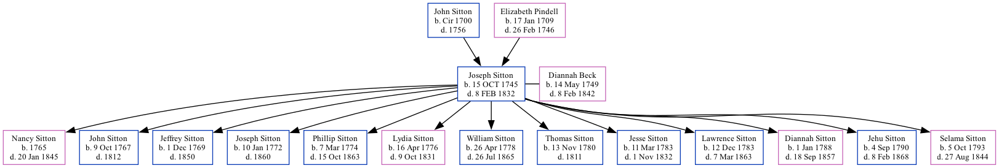

Joseph Sitton 1745 - 1832
[ Home ] | [ Surnames Index ] | [ Family History ]The 7th of 8 children of John Sitton and Elizabeth Pindell, , Joseph was the 6 times great-grandfather of Stephanie Hardesty (née Teten), was born in Culpepper Royal Colony, Virginia on Oct 15, 17451,2 and, and was orphaned at the age of 11 following the death of his mother in 1746 and father in 1756.
He married Diannah Beck (with whom he had 13 children: Nancy, John, Jeffrey, Joseph, Phillip, Lydia, William, Thomas, Jesse, Lawrence Bradley, Diannah Beck, Jehu L and Selama) in Orange, North Carolina in 1766
He died on Feb 8, 1832 in Troy, Lincoln Co., Missouri2.
Parents
- John was born c. ir 1700
- Elizabeth was born on Jan 17, 1709
Children
- Nancy was born in 1765
- John was born on Oct 9, 1767
- Jeffrey was born on Dec 1, 1769
- Joseph was born on Jan 10, 1772
- Phillip was born on Mar 7, 1774
- Lydia was born on Apr 16, 1776
- William was born on Apr 26, 1778
- Thomas was born on Nov 13, 1780
- Jesse was born on Mar 11, 1783
- Lawrence Bradley was born on Dec 12, 1783
- Diannah Beck was born on Jan 1, 1788
- Jehu L was born on Sep 4, 1790
- Selama was born on Oct 5, 1793
Citations
- U.S. and International Marriage Records, 1560-1900 Ancestry.com Operations Inc
- U.S., Sons of the American Revolution Membership Applications, 1889-1970 Ancestry.com Operations, Inc.
Family Tree
Data (GEDCOM) maintained by Jay Weston Hannah, Omaha, Nebraska, USA.
Website generated by ged2site. Last updated on Jun 18, 2024.